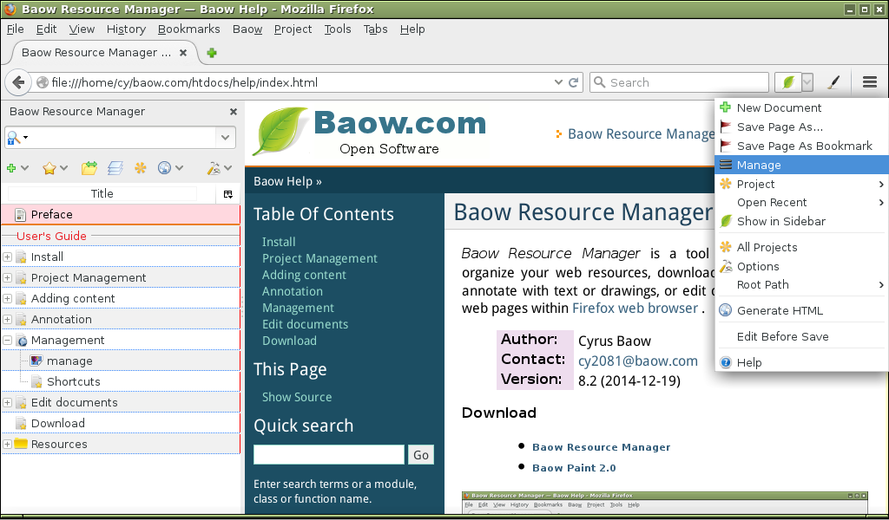

Baow Resource Manager¶
Baow Resource Manager is a tool that makes it easy to organize your web resources, download and save web pages , annotate with text or drawings, or edit documents and generate web pages within Firefox web browser .
Author: Cyrus Baow Contact: cy2081@baow.com Version: 11 Release: 2015-08-23
Download

- Baow Resource Manager 11
- Baow Paint 2.1
Features :
- Download and save or bookmark web pages or files
- Annotation with text or drawings.
- Projects management in multi levels.
- Easy tasks list.
- Launch local bookmark with customized applications.
- Gvim editor support.
- Write Sphinx documents and generate web pages with the Sphinx tools.
- Easily configure and build documents.
- Automatic create section headers level, no marker characters.
- Lots of quick menus, help you write and preview Sphinx documents.
User’s Guide¶
Indices and tables¶
- Index
- Search Page
- glossary